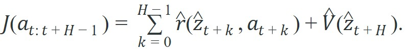
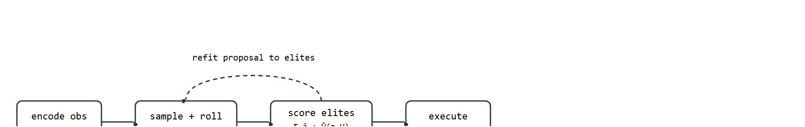

"A planner that searches in latent space trades visual completeness for the only thing control actually needs: accurate reward and value."
A Planner That Searches In Compressed State
Figure 38.5A frames the idea this section develops: prediction is only useful when it feeds back into an action choice that is then tested against reality.
Picture a robot arm mid-reach: it has milliseconds to decide whether to adjust its grip angle. Reconstructing a full pixel image of the scene would waste most of that budget. TD-MPC2 strips the world model down to exactly what planning needs: a latent space that preserves reward, value, and local dynamics, nothing more. Right now, as embodied AI moves from single-task demos to agents controlling dozens of continuous-control tasks from one model, that efficiency is decisive. Here you will build the latent MPC loop from scratch and see exactly why the terminal value head is the load-bearing piece.
Keep the planner in focus. The world model exists so candidate action sequences can be rolled forward cheaply in latent space, scored by predicted reward plus terminal value, and improved before the first action is executed.
TD-MPC2 shows that a world model can be useful without being visually expressive at all. If reward, value, and local dynamics are preserved in the latent, that can be enough for strong control.
Dreamer uses the world model to train a policy in imagination. TD-MPC2 takes a different path: keep planning online with model predictive control (MPC, repeatedly optimizing a short action sequence, executing only the first action, then replanning), but make the planning problem small by searching in latent space. This matters when the action must adapt to local scene structure now, not only through a policy learned offline.
TD-MPC2 evaluates candidate action sequences by rolling a latent model forward and scoring cumulative reward plus terminal value:

The planner searches directly in latent space, often with a sampling-based optimizer such as the Cross-Entropy Method (CEM) or Model Predictive Path Integration (MPPI, a close cousin of CEM that reweights every sampled sequence by a softmax of its score instead of keeping only a hard elite subset). This section works through CEM in detail below; MPPI follows the same sample-score-refit shape but blends all candidates instead of discarding the non-elites outright.The practical insight is decoder-free latent sufficiency: if the latent can predict rewards, values, and next latent states accurately enough for search, reconstructing pixels at every step is unnecessary overhead. In the TD-MPC2 paper (Hansen et al., 2023), a single model covers over 100 continuous-control tasks across multiple embodiments. A pixel-reconstructing baseline at the same compute budget covers far fewer tasks before it hits memory and latency limits. Put a number on the difference: a decoder-equipped model at the same parameter budget needs roughly 10 times as many candidate rollouts to search the same action horizon, because each rollout must pass through a full image decoder before scoring. The practical planning budget therefore shrinks from hundreds of candidates to tens. That is why TD-MPC2 stays fast even while scaling to many continuous-control and multitask settings.
"At scale" here has a specific mechanism, not just a bigger training set: a single shared encoder, dynamics model, reward head, and value head are reused across every task and embodiment, with a small task-specific embedding (and, per embodiment, a matching action-dimension head) telling the shared network which robot and goal it is currently controlling. Because the expensive part, the latent representation and the planner that searches it, is shared, adding a new task or embodiment costs a new task embedding and a lightweight action head rather than a new world model trained from scratch.
Before reading on, ask yourself: if you had to choose between a world model that reconstructs a photorealistic frame and one that predicts only reward and value, which would you trust to control a robot arm in real time?
A world model that looks beautiful but cannot score a candidate action is a painting, not a planner.
On a physical robot this matters directly. Decoding a full image at every candidate rollout step multiplies memory bandwidth and GPU time by the image resolution, which pushes per-step latency above the controller's hard deadline. A manipulator running at 100 Hz has 10 ms per cycle; spending 7 ms on pixel reconstruction leaves almost nothing for the search itself. Skipping the decoder keeps the entire planning budget available for sampling more candidates, and more candidates mean better action selection under the same wall-clock constraint.
Mechanically, the decoder-free property is enforced at training time by omitting any pixel reconstruction loss from the objective. The encoder is trained only to support accurate reward prediction, value prediction, and one-step latent transition, so gradients never push it toward visual completeness. The latent dimension can therefore be kept small (TD-MPC2 uses 512 dimensions regardless of embodiment) because it carries only the control-relevant signal, not the full appearance of the scene.
Keeping the latent this lean is only worthwhile if the small latent can still support reliable search, and that reliability hangs on two conditions. TD-MPC2's success rests on two linked assumptions. First, the latent dynamics must stay locally smooth so that trajectory optimization can make progress. Second, the terminal value must compensate for the planner's short horizon. When the second assumption fails, the problem is immediate. Take a reaching task with horizon 5 and a reward that only appears at step 20 (grasping the object). A weak terminal value head assigns near-zero score to every candidate sequence. The planner then picks actions at random among the top elites, because all scores are indistinguishable. Extending the horizon does not fix this; it only slows replanning. The terminal value head must distinguish "arm aligned with target" from "arm pointing away" at the horizon boundary, or the search produces no useful signal.
So far: skipping the decoder buys back the millisecond budget the controller needs, that skip is enforced during training by simply never including a pixel-reconstruction loss, and the payoff only holds if the resulting latent stays locally smooth and its terminal value head can still rank distant outcomes correctly.
Think of the terminal value like a hiker's altimeter reading at the edge of the fog. The hiker can only see five steps ahead through the mist, so every nearby path looks identical in the short window. The altimeter tells her whether she is trending uphill toward the summit or downhill toward the valley floor at the fog boundary. Without that single reading, all five-step paths feel equally worthwhile and she picks at random. The terminal value head is exactly that altimeter: it converts the invisible future beyond the planning horizon into a single number that separates promising from useless candidate sequences.
Latent dynamics smoothing breaks silently. When the encoder collapses two visually distinct states (an arm above the target versus below it) into nearby latent points, the gradient through the model looks fine and training loss stays low, but the planner scores both configurations almost identically and cannot distinguish approach from retreat. This usually surfaces as high variance in elite selection across planning steps rather than as an obvious loss spike. Monitoring the spread of elite scores, not just mean reward, is the practical diagnostic.
A common assumption is that a "decoder-free" latent world model is simply a compressed image representation with the decoder removed to save memory, and that the latent still encodes a recoverable visual scene. This is wrong in the embodied AI context: TD-MPC2's encoder is never trained to preserve visual information at all. Gradients come only from reward prediction, value prediction, and one-step latent transition losses, so the latent discards any appearance detail that does not affect control. The correct mental model is that the latent is a control-sufficient summary, not a compressed photograph: two states that look very different but lead to identical future rewards can be mapped to the same latent point, and that is by design rather than a failure of compression quality.
Decoder-free sufficiency is the world-model equivalent of not photographing every meal you cook: as long as you remember whether it tasted good and roughly what happened on the stove, you can plan dinner tomorrow just fine. The pixel reconstruction was never the point.
Encode the current observation once, sample many candidate action sequences, roll each sequence through the latent model, rank them by predicted reward plus terminal value, refit the action proposal distribution to the elites (the small subset of top-scoring candidates, typically the highest 5 to 10 percent by predicted return, used to re-center the sampling distribution for the next round), then execute only the first action and repeat at the next real observation.
Figure 38.5B below traces this loop end to end: an outer replanning cycle around an inner search cycle that samples, scores, and refits candidate action sequences before a single action reaches the robot.

Trace one planning step with horizon H=2, four candidate sequences, and a top-2 elite cutoff. Suppose the encoder gives current latent $z_t$ and the reward head and value head produce these scores for each sampled sequence:
Candidate A: $\hat r$ = 0.4 + 0.5, $\hat V(\hat z_{t+2})$ = 1.2, total J = 2.1.
Candidate B: $\hat r$ = 0.1 + 0.2, $\hat V$ = 0.3, total J = 0.6.
Candidate C: $\hat r$ = 0.6 + 0.3, $\hat V$ = 1.0, total J = 1.9.
Candidate D: $\hat r$ = 0.0 + 0.1, $\hat V$ = 0.2, total J = 0.3.
Rank by J: A (2.1) > C (1.9) > B (0.6) > D (0.3). The top-2 elites are A and C. If their first actions are $a^A_0$ = 0.8 and $a^C_0$ = 0.6, the refit proposal mean for action slot 0 becomes (0.8 + 0.6) / 2 = 0.7. Notice the terminal value did the deciding work: by raw reward alone C (0.9) beats A (0.9 tie), but A's larger $\hat V$ of 1.2 versus C's 1.0 pushes A to the top. The planner now executes the first action drawn around 0.7 and replans at the next real observation.
Having traced that scoring-and-refit step by hand, it helps to see the same primitive as runnable code. The code below implements a tiny CEM-style search in latent space. It is not the full algorithm, but it exposes the planning primitive that makes TD-MPC2 different from imagined actor learning.
# Sample action sequences, score them in latent space, and keep elites.
# This mirrors the inner loop of a short-horizon latent MPC planner.
import numpy as np
rng = np.random.default_rng(3)
action_sequences = rng.normal(0.0, 0.4, size=(6, 3))
reward_weights = np.array([1.0, -0.3, 0.5])
scores = action_sequences @ reward_weights
elite_ids = np.argsort(scores)[-2:]
elite_mean = action_sequences[elite_ids].mean(axis=0)
print(
{
"best_score": round(float(scores[elite_ids[-1]]), 3),
"elite_mean": np.round(elite_mean, 3).tolist(),
}
){'best_score': 0.565, 'elite_mean': [0.255, -0.146, 0.146]}
Expected behavior: The elite mean summarizes which local action direction the planner should prefer next. If the elite set changes wildly under tiny observation perturbations, the latent model or reward head is too unstable for MPC to trust.
Warm-starting means initializing the next search from the previous solution instead of from scratch, so the optimizer only has to correct a small shift rather than rediscover the whole action sequence. When warm-starting TD-MPC2's CEM planner between control steps, shift the previous solution by one timestep before reusing it: copy actions 1 through H-1 from the old plan into positions 0 through H-2, then initialize position H-1 with the action-space mean (typically zero for normalized continuous actions). Skipping this shift and reusing the old plan as-is means the first elite candidate is already one step stale, which degrades performance most on fast-changing tasks. The official TD-MPC2 implementation does this in tdmpc2/tdmpc2.py under the plan method; if you port the planner, this one-line index shift is the most commonly dropped detail.
A handwritten search loop like this is about 15 lines. The maintained path is the official TD-MPC2 stack, which handles batched candidate rollouts, target networks, multitask action heads, and planner-state warm starts internally. That reduces the engineering burden while preserving the decoder-free planning pattern.
Online replanning can become a latency trap. A planner that scores better on paper but misses the control deadline is operationally worse than a slightly weaker method that acts in time.
A manipulator reaching around clutter may need to replan every few tens of milliseconds as the target shifts or a human enters the workspace. A decoder-free latent planner is attractive here because the action search can stay cheap. The danger is local model bias: if the latent oversmooths collision or contact dynamics, the planner will confidently choose unsafe elites.
Follow-up work in this line has reported deploying latent MPC controllers of this kind on real quadruped and bipedal hardware, where the decoder-free planner runs the CEM search onboard fast enough to track shifting terrain and disturbances without reconstructing camera frames. In principle the same property that lets a single policy score across 100-plus simulated tasks should ease transfer to physical locomotion, because the latent only needs to preserve the reward and value signal that the leg controllers actually consume; confirming this on a specific robot still requires validating the terminal value head under real contact dynamics rather than assuming simulation results carry over unchanged.
Cross-embodiment latent alignment (2024-2025). Scaling latent MPC to heterogeneous robots requires latent spaces that stay geometry-aware even when encoders are shared across limb counts and joint ranges. Hansen et al. (2024) at UC San Diego follow up TD-MPC2 with experiments showing that task-conditioned latent heads significantly slow embodiment collapse, but a principled alignment loss remains an open design choice.
Foundation world models for real robot deployment (2024-2025). Groups at Google DeepMind and Stanford are training large-scale latent world models on diverse robot datasets (including the Open X-Embodiment corpus) and then fine-tuning the planner head per robot rather than re-training the full model. UniSim (Yang et al., 2024) demonstrates that a video prediction backbone can be distilled into a control-sufficient latent that supports downstream MPC with minimal task-specific data.
Uncertainty-aware latent planning (2024-2026). A persistent failure mode for latent MPC is overconfident elite selection in out-of-distribution states. Recent work from the Robotic Systems Lab at ETH Zurich uses ensemble disagreement in the latent transition model as a real-time risk signal to shrink the planning horizon or halt replanning when model uncertainty exceeds a threshold. Scaling this to a single large model rather than an ensemble is an open problem.
Open problem. TD-MPC2's latent is trained to be control-sufficient, not geometrically consistent: two states that share the same reward trajectory can collapse to the same latent point even if they differ in contact mode or obstacle position. This makes the latent useless as input to a safety filter or a constraint-aware controller that needs to reason about workspace boundaries. Designing a training objective that keeps the latent control-sufficient and contact-geometry-separable simultaneously, verified on a contact-rich manipulation benchmark, remains unsolved and would directly enable safe real-robot deployment of latent MPC.
For classical MPC intuition, revisit Chapter 37. For control constraints and safety filters that planners must eventually obey, connect to Chapter 7. For offline data regimes that can pretrain the latent, see Chapter 25.
TD-MPC2 is a reminder that world models are not one family. Some are useful because they let you train a policy cheaply in imagination; others are useful because they let you optimize the next action online. The architecture, loss, and evaluation protocol should therefore be chosen around the intended control interface, not around visual elegance.
Its broader importance is scale: one core design covers many continuous-control tasks and multiple embodiments. For builders, that charts a practical path between narrow task-specific MPC and fully general policy models.
Beginner (weekend): Implement a minimal latent MPC loop in Gymnasium's Pendulum-v1 environment: train a small MLP encoder and one-step latent transition model from random rollouts, then run a CEM planner with 64 candidates and horizon H=3 in the learned latent space. The key challenge is verifying that your terminal value head, even if it is just a linear layer, produces scores that correlate with actual episode return before you trust the planner's elite selection.
Intermediate (1-2 weeks): Port the TD-MPC2 planning loop to a manipulation task in MuJoCo using the official td-mpc2 codebase, then swap the CEM sampler for MPPI and compare replanning latency and task success rate on dm_control's reacher-hard. The key challenge is keeping the per-step wall-clock below the task's control frequency (50 Hz for reacher) while increasing the candidate count enough for MPPI's weighted averaging to outperform CEM's hard elite cutoff.
Intermediate-plus (2 weeks): Build a multitask latent world model in LeRobot that shares a single 256-dimensional encoder across two embodiments (a simulated Franka arm and a wheeled base in PyBullet), train it jointly on reaching and navigation demos, then run a nearest-neighbor audit on encoded states to check whether intra-embodiment contact phases cluster before cross-embodiment collapse occurs. The key challenge is designing a task-conditioning mechanism, such as a task embedding concatenated to the latent, that prevents the shared encoder from averaging away the joint-space geometry that separates manipulation from locomotion.
Goal: Empirically confirm that the terminal value head, not the short-horizon reward sum, is what makes latent MPC select good actions on a sparse-reward task.
Tools needed: Python, the official tdmpc2 repository (or a small CEM planner you write yourself), and Gymnasium with a continuous-control task such as Pendulum-v1 or a dm_control reacher. Budget 15-30 minutes.
What to do and vary: Load a trained TD-MPC2 checkpoint (or train a tiny encoder, transition, reward, and value head on random rollouts). Run the CEM planner normally and record episode return. Then ablate the planner in two ways: (1) zero out the terminal value term $\hat V(\hat z_{t+H})$ so candidates are scored by reward sum alone, and (2) sweep the horizon H from 1 up to 20 with the value term restored.
What to observe: With the value head zeroed, episode return should collapse on the sparse task and the spread of elite scores should shrink toward zero (all candidates look alike). With the value head restored, short horizons like H=3 should already perform well, and pushing H higher should give diminishing returns while replanning latency climbs. Plotting return and per-step wall-clock against H makes the reward-versus-latency trade-off concrete.
Can you explain why TD-MPC2 can skip image reconstruction, what role the terminal value plays, and what measurement would tell you the planner is too slow to justify its better sample efficiency?
TD-MPC2 works when the latent space is accurate enough for short-horizon search and cheap enough that online replanning fits the task's timing budget.
Suppose your planner improved reward by 8 percent but doubled control latency. Write the experiment table you would need to decide whether the TD-MPC2-style planner is still the right choice.
Hansen, N., Su, H., and Wang, X.. "TD-MPC2: Scalable, Robust World Models for Continuous Control." (2023). https://openreview.net/forum?id=Oxh5CstDJU
This is the primary source for the multitask decoder-free latent MPC story.
Hafner, D. et al.. "Mastering Diverse Domains through World Models." (2023). https://arxiv.org/abs/2301.04104
DreamerV3 remains the most important comparison point for latent imagination rather than latent MPC.
TD-MPC2 Project Page. https://www.tdmpc2.com/
The project page is useful for task coverage, videos, and implementation links.